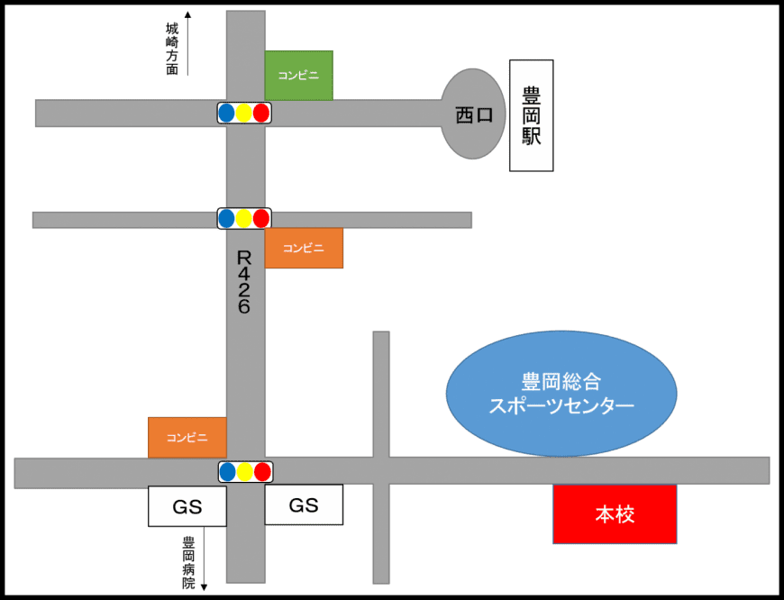

グローバルビジネス科とは
「日本で働きたい」「日本で学んだスキルを活かして母国で起業したい」といった 留学生に、企業で通用する社会人基礎力、ビジネス能力を身につけてもらい 就職の可能性を高め、幅広い職種に対応できる人材を育成します。
アルバイトに対応した
午前の集中コース
-
- 1年次
-
- 基本的なビジネスマナー・社会人基礎力
- ビジネスに必要な日本語
パソコンスキルなど - 就職活動の基本スキル
-
- 2年次
-
- 日本語・外国語能力の向上
- 企業インターンシップ
- 就職内定
-
- 目指す就職
-
- ホテルフロント受付
- 営業
- 販売
- 接客
- 通訳
カリキュラム
就労ビザに対応した
カリキュラム編成
就労ビザを取得するためには、実際の仕事に必要な専門科目を履修することが必要となります。
-
- ビジネス総合
- ビジネスに必要な経営学、簿記などの科目を総合的に学び 幅広い職種に対応できる知識を身につけます。
-
- ビジネスマナー
- ビジネスシーンにおける礼法、接客、ビジネス会話、文書作成等のスキルを身につけます。
-
- IT実践
- HTML、CSS、JavaScriptの基礎を学習し、WEBサイトを制作できる力を身につけます。
-
- パソコンスキル
- Excel、Word、PowerPointなどのビジネスで必要とされるパソコンスキルを身につけます。
-
- マーケティング
- 市場調査やケーススタディなどの実践を通してプレゼンテーションに必要な発想力や 情報収集能力を身につけます。
-
- ホテル観光マネジメント
- 日本特有の文化を理解し、シーンに合わせた心づかいの大切さや、 文化風習の違う宿泊客をもてなす知識を身につけます。
-
- イラストレーター
- ビジネスシーンにおけるチラシ、ポスター等、紙媒体のデータ制作を学びます。
-
- 外国語会話
- 日常会話からビジネス会話まで、幅広いシーンで実際に使える英語を学びます。
-
- 日本語
- 「読む・書く」「話す・聞く」の総合的な言語能力を身につけ、 日本語能力試験N2以上合格を目指す。
夢を叶える就職プログラム
就職プログラム
-
- 専門教育
- 専門的知識・技術を学び高いスキルも身につけます
-
- キャリア教育
- 将来の夢実現に向け自ら行動する力を育てます
-
- 人格教育
- 礼儀やマナーなど社会人に必要な人格を養います
就職キャリアサポート
-
自己理解・職業形成
コミュニケーション能力習得 -
就職活動の進め方と理解
就職活動の基本スキル習得 - 企業ガイダンス
- 採用試験準備
- 採用試験
- 内定
- 就職前の準備指導
インターンシップ制度
就職内定を目的とし在学期間中に一定期間企業で勤務しお互いに能力や適正を判断し、就職を固めていく制度です。
応援メッセージ
日本ITビジネスカレッジ
学校見学と説明会をおこないます。
進学する学校を決めるために見学はとても大切です。
参加をご希望の方は下のボタンから、予約して参加してください。
ぜひ、お友達と一緒に参加お待ちしています！
学校見学と説明会をおこないます。
進学する学校を決めるために見学はとても大切です。
参加をご希望の方は下のボタンから、予約して参加してください。
ぜひ、お友達と一緒に参加お待ちしています
学費
| 1年次 | 2年次 | |
|---|---|---|
| 入学金 | 50,000円 | 0円 |
| 授業料 | 600,000円 | 600,000円 |
| 教育充実費 | 150,000円 | 150,000円 |
| 教材費 | 70,000円 | 70,000円 |
| 合計 | 770,000円 | 820,000円 |
| 奨学金 | (最大)-100,000円 | 0円 |
赤塚奨学金制度
下記項目に該当する者には、奨学金として1年次の授業料の一部が減免されます。なお、奨学金の返済義務はありません。
| 奨学金項目 | 授業料の減免額 |
|---|---|
| AO入試出願 | 100,000円 |
| 早期出願 | 50,000円 |
| 学校推薦 | 50,000円 |
オープンキャンパス
オープンキャンパス
学校見学と説明会をおこないます。 進学する学校を決めるために見学はとても大切です。 参加をご希望の方は下のボタンから、予約して参加してください。 ぜひ、お友達と一緒に参加お待ちしています！
アクセス

豊岡駅西口よりR426沿いに豊岡病院方面へ
ガソリンスタンド手前の十字路を左折
豊岡総合スポーツセンター駐車場前に本校校門がございます
(徒歩目安20分)
J〒668-0065 兵庫県豊岡市戸牧500-3
ＴＥＬ：0796-22-3786
ＦＡＸ：0796-24-2282